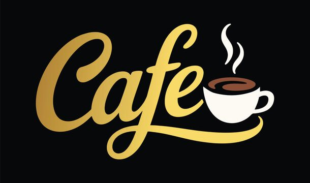
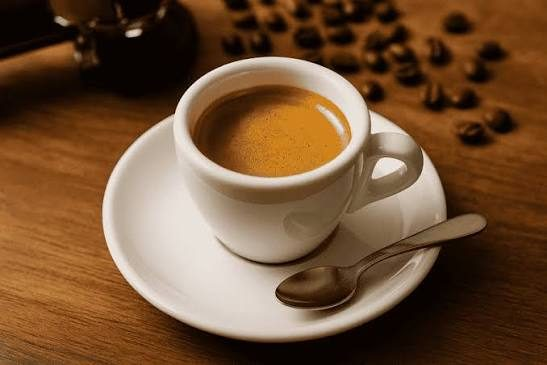
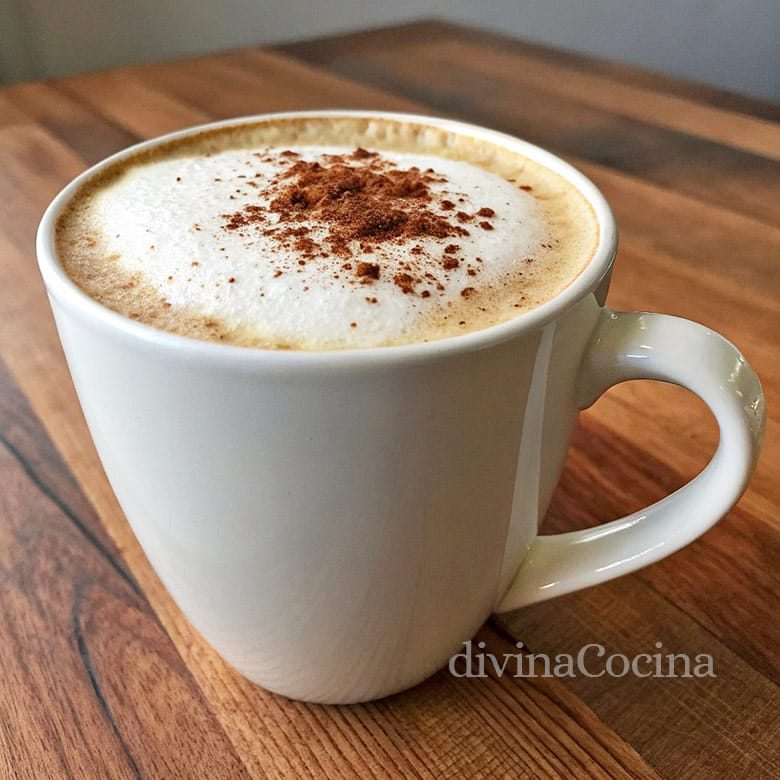
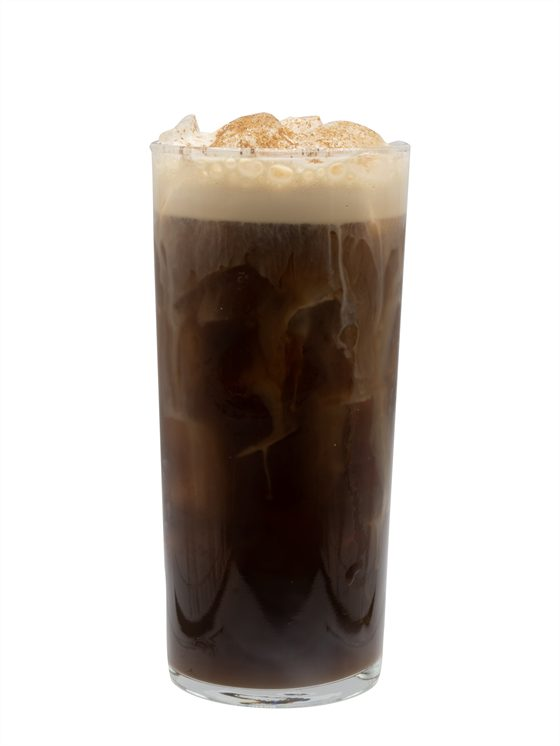
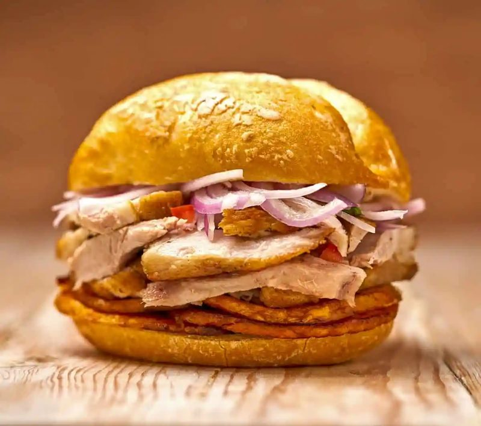
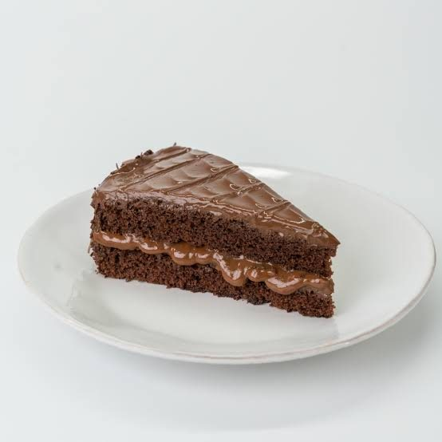
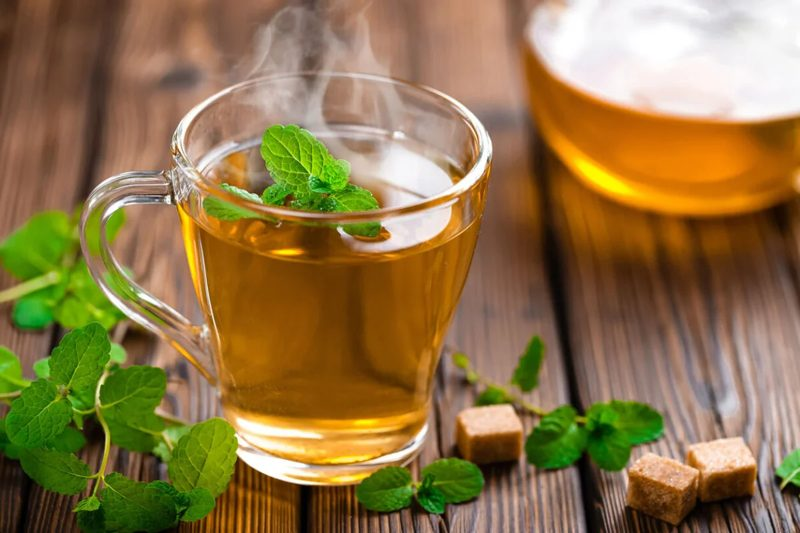

Café de altura, tostado en el día y servido con calma. Ven por una taza.

Café de origen cusqueño, intenso y de cuerpo suave.

Espresso con leche vaporizada y espuma cremosa.

Infusión en frío durante 12 horas, con hielo.

Pan crocante, camote frito y salsa criolla.

Porción húmeda con cacao peruano.

Manzanilla, hierba luisa y menta fresca.
Lunes a sábado, 7:00 a.m. – 9:00 p.m.Av. 2 de Mayo, Jr. Ascope 582